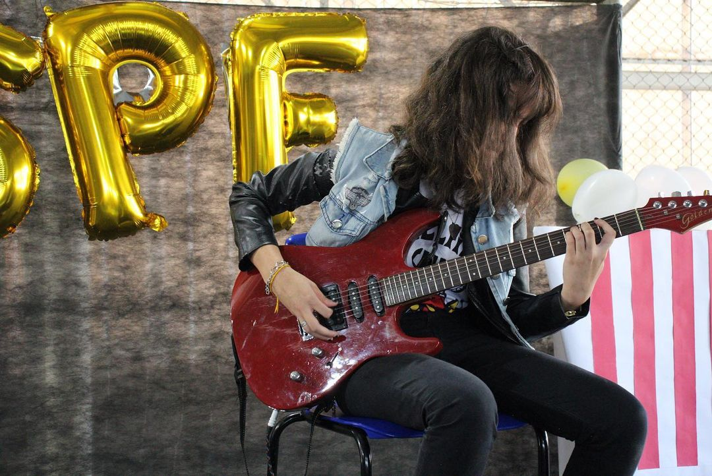
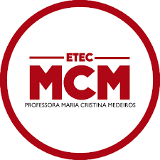

Postagens relacionadas a eventos da ETEC MCM.
Site oficial: https://etecmcm.com.br

Fonte: https://www.instagram.com/p/Cr4JesovBTP/
A SPF é normalmente comemorada (ou mencionada) na maioria das ETECs, porém, a MCM é uma das únicas que a comemora com festas.
A última SPF a possuir um inter-classe.
Após uma bringa entre alunos e professores
(resultando em um professor deficiente visual sendo acidentalmente caindo no chão)
foi determinado que as próximas SPFs não teriam inter-classes.
O uso inadequado da logo pode levar a medidas punitivas.
